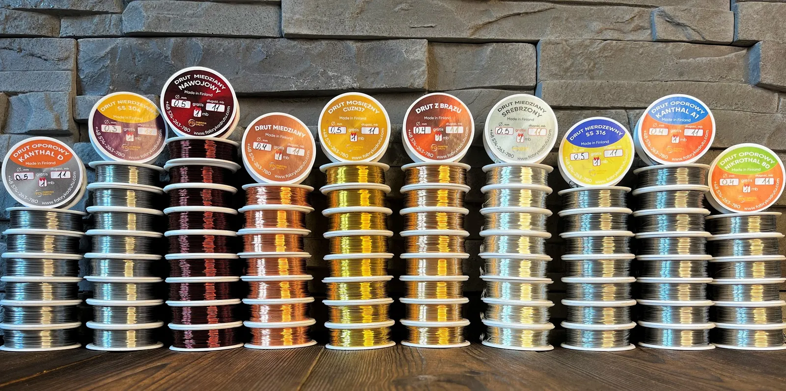
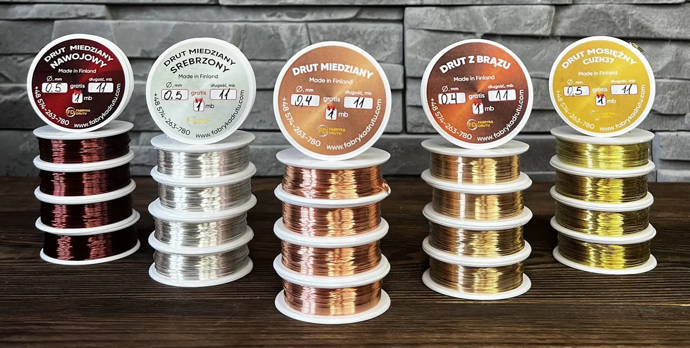
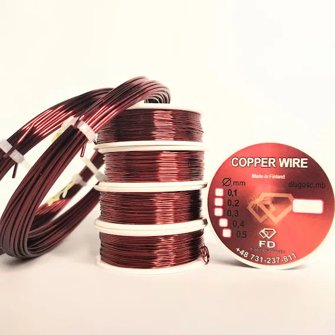
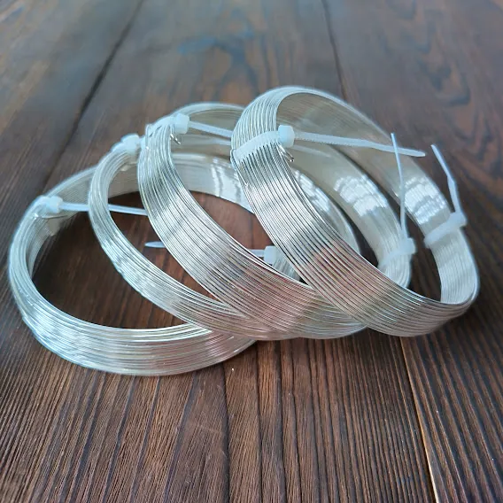
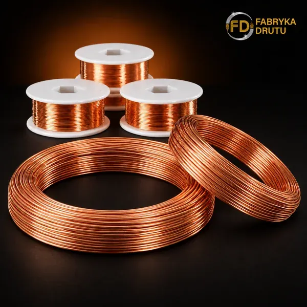

Drut miedziany, oporowy i nierdzewny na metry
Ponad 150 rodzajów i średnic, od 0,05 do 3 mm, w odcinkach od 1 do 100 m. Sprzedaż detaliczna i hurtowa ze Świdnika, wysyłka w całej Polsce.
Darmowa wysyłka od 199 zł · 1 metr gratis przy drucie 0,1-0,5 mm na szpuli
Wybierz metal
Każdy drut w kilku średnicach i długościach. Średnicę i odcinek wybiera się na karcie produktu, cena liczy się od razu.
Przesuń, żeby zobaczyć wszystkie rodzaje
Do czego jaki drut
Uzwojenia, cewki, elektronika
Drut nawojowyMiedź z podwójną izolacją emaliową, temperatura pracy od -65 do +200°C, napięcie przebicia izolacji powyżej 7,5 kV.
Grzałki, spirale, piece
Kanthal i NikrothalKanthal A1, Kanthal D i Nikrothal 80 (Cr20 Ni80) w średnicach od 0,05 mm, do tego taśma oporowa.
Cięcie styropianu
Drut oporowyDrut oporowy do termicznego cięcia pianek i sprężyny, które trzymają go w naciągu.
Biżuteria, rękodzieło, florystyka
Miedź, mosiądz, brązMiękki drut miedziany, mosiężny, brązowy i miedziany srebrzony (srebro próby 925), który nie łuszczy się podczas pracy.
Modelarstwo i drobne naprawy
Drut modelarskiMiękki drut miedziany, aluminiowy i nierdzewny SS 304 / SS 316 do 3 mm średnicy.


Zaczęło się od dwóch obrączek z miedzianego drutu
Dziadkowie naszego dyrektora nie mieli pieniędzy na obrączki ślubne, więc dziadek, kowal, wykuł je z miedzianego drutu. Kilkadziesiąt lat później wnuk zajmuje się drutem na co dzień: miedzianym, mosiężnym, brązowym, oporowym i nierdzewnym.
- Od 2011 roku
- Tyle sprzedajemy druty. Mały zespół, a od tysięcy klientów pozytywne opinie.
- Sprawdzony skład
- Materiał od zaufanych dostawców, głównie z Europy. Każdą dostawę sprawdzamy pod kątem składu chemicznego i właściwości mechanicznych.
- Każda średnica
- Staramy się mieć w sklepie wszystkie rozmiary danego drutu, żeby nie trzeba było szukać ich w kilku miejscach.
Na zamówienie
Gdy w sklepie nie ma gotowego rozwiązania, zrobimy element z drutu na wymiar. Wystarczy napisać, do czego ma służyć.

Koła łączące do biżuterii
Kółka z drutu miedzianego, mosiężnego, brązowego lub srebrzonego w średnicy i grubości, której potrzebujesz.
Spirale grzejne do pieców
Spirale z drutu oporowego Kanthal lub Nikrothal nawinięte pod wymiar pieca albo grzałki.

Większe ilości
Sprzedajemy też hurtowo. Napisz, jaki drut, średnica i ile metrów, a przygotujemy wycenę.
Poradniki
Zanim kupisz drut oporowy, sprawdź, który stop wytrzyma Twoją temperaturę.
Kanthal A-1 i Kanthal D: poradnik techniczny
Czym różnią się oba stopy i który wybrać do konkretnego zastosowania.
Jak wybrać drut do cięcia styropianu
Nichrom czy Kanthal, jaka średnica i jak dobrać drut do termicznego cięcia pianek.
Kanthal czy Nichrome do pieca
Porównanie maksymalnych temperatur i żywotności dwóch stopów oporowych.
Kontakt i zamówienia
Telefon+48 574 263 780
E-mailmasterdrutu@gmail.com
AdresFabryka Drutu FD
ul. Kanonika Jana Hryniewicza 6
21-040 Świdnik
Godzinyponiedziałek - piątek, 9:00-18:00
Też na AllegroNasze druty kupisz również w sklepie Fabryka Drutu na Allegro.